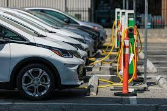

Austin é uma das cidades mais futuristas dos EUA e está implantando tecnologias com visão de futuro para melhorar a vida de seus residentes. Ele tem um centro de tecnologia em rápida expansão e uma diretiva de dados abertos que está em vigor desde 2013.
São áreas de influência em uma cidade, fornecendo os aspectos de acessibilidade e conectividade das estratégias de transporte: elas são únicas em termos de função, localização, serviços e uso em termos de tempo e espaço.
O objetivo geral das estações inteligentes é permitir um tipo de planejamento urbano denominado desenvolvimento orientado para o trânsito.
Possibilitar um melhor entendimento das operações e custos operacionais associados ao consumo de energia por meio de tecnologias (principalmente sensores);
Aumentar a integração com outros modos de transporte instalando uma infraestrutura de estacionamento inteligente para carros e bicicletas, estações de recarga de veículos elétricos, etc., permitindo assim uma experiência de usuário mais perfeita em diferentes modos de transporte.
Programa para aumentar o número de veículos elétricos, desde modo, implementando estações de abastecimento elétrico dos carros pela cidade. Como forma de incentivo.
Nas próximas décadas, todos os tipos de veículos podem mudar para elétricos - de serviços de compartilhamento de carros a caminhões de entrega e ônibus escolares. Por trás dessas decisões estão os operadores de frotas que estão cada vez mais explorando e se comprometendo com a eletrificação de veículos, desde veículos leves a pesados.
Não emitir poluentes no meio ambiente é uma das maiores contribuições do veículo elétrico. Em comparação ao motor a combustão, o de propulsão elétrica reduz em, aproximadamente, 30% a geração de CO₂;
Em congestionamentos, os carros elétricos gastam energia de forma mais equilibrada no “anda e para” das ruas.
A cidade de Nova York aparece em quase todas as listas de cidades inteligentes nos Estados Unidos e em pesquisas globais. NYC hospeda uma conferência global anual Smart City New York.
A cidade de Nova York concluiu recentemente a maior atualização de gerenciamento de tráfego urbano do mundo.
Reformar a infraestrutura obsoleta, melhorar a eficiência e a confiabilidade, reduzir o congestionamento nas ruas e economizar custos.
O projeto, que utiliza roteadores celulares em cruzamentos por toda a cidade, foi projetado não apenas para melhorar o fluxo do tráfego, mas também para integrar a tecnologia de veículos conectados para melhorar a segurança nas ruas da cidade;
Centenas de quiosques com tela sensível ao toque também foram instalados nas ruas da cidade, onde os moradores podem encontrar informações sobre a cidade e também carregar seus telefones.
Nova York usa um bilhão de galões de água por dia. Para ter uma ideia melhor de como exatamente essa água está sendo usada, a cidade implantou um sistema de Leitura Automática de Medidores para monitorar o uso da água, bem como dar aos moradores da cidade uma visão clara de seu consumo de água.
Coleta automática de dados de consumo, diagnóstico e status de medidores de água ou dispositivos de medição de energia (gás, elétrico) e transferência desses dados para um banco de dados central para faturamento, solução de problemas e análise.
O faturamento pode ser baseado no consumo quase em tempo real, em vez de estimativas baseadas no consumo passado ou previsto;
Essas informações oportunas, juntamente com a análise, podem ajudar os fornecedores de serviços públicos e os clientes a controlar melhor o uso e a produção de energia elétrica, gás ou água.